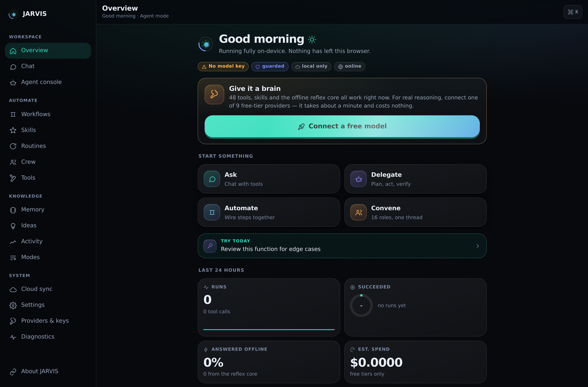
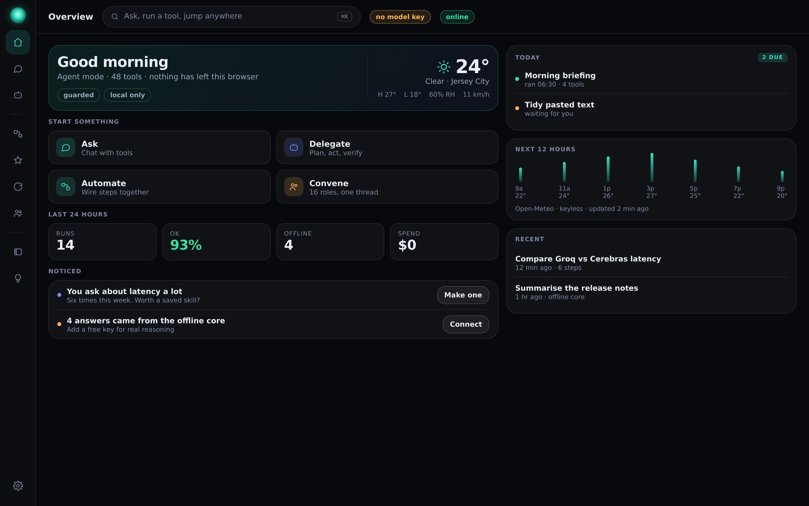
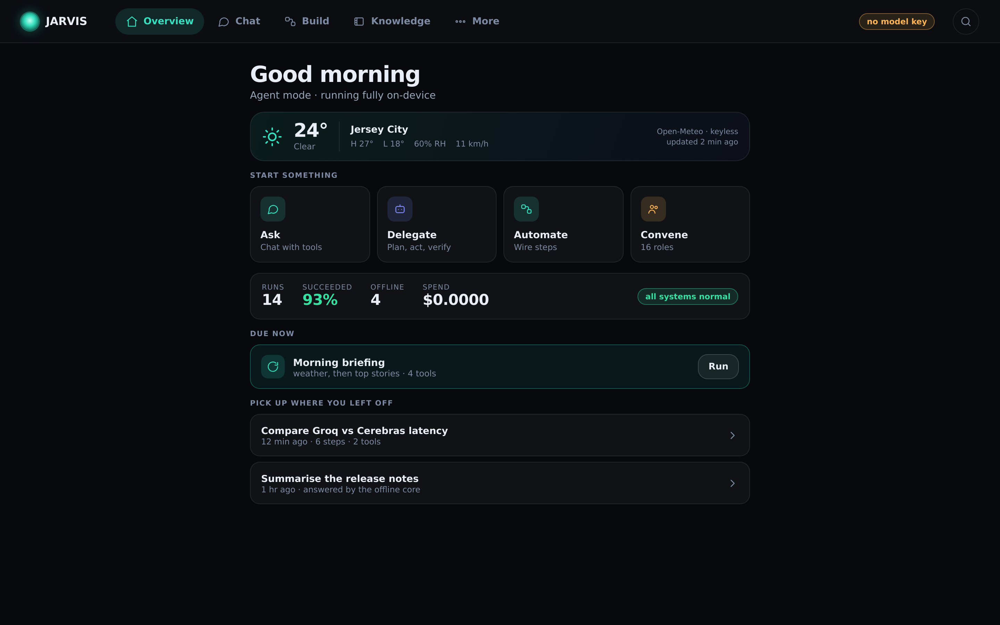
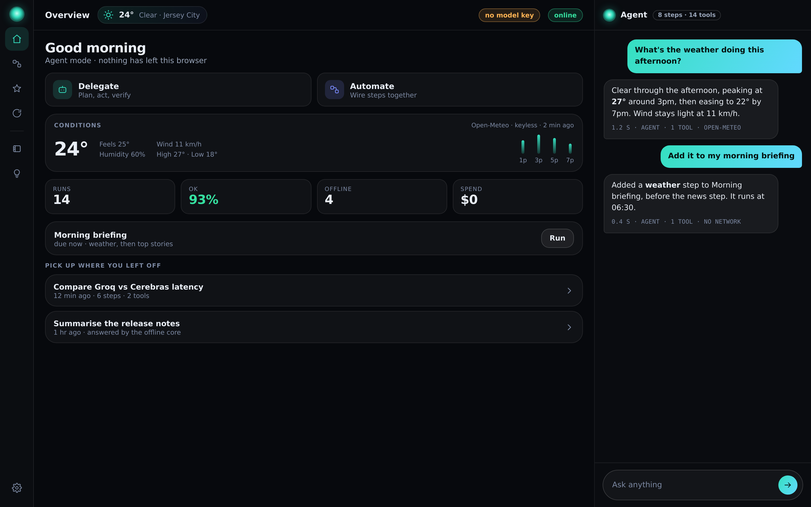

236px labelled sidebar · narrow centred column · four zero-value widgets

64px icon rail · top command bar · full-bleed two-column grid · weather in the hero + hourly panel

No sidebar at all · horizontal nav · one 720px column, the phone layout grown up · weather as a slim strip

60px icon rail · overview centre · agent thread docked right, always live · weather as a status pill + conditions card
